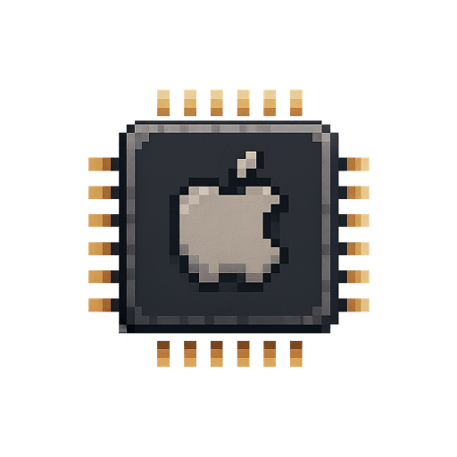

Maiks Favourite
A personal theme · not an operating system
This one isn't an operating system — it's a personal favourite. “Maiks Favourite” is a hand-tuned blend of the looks the maker likes best, pulled together into the desktop he actually keeps switched on. The little crown (👑) marks it as the house pick.
Think of it as the mixtape of RetroMac themes: no historical rules, just the details that felt right.
What made it special
- A curated mash-up rather than a faithful re-creation.
- Tuned by feel — the wallpaper, dock and accents the maker actually uses.
- Crowned (👑) as the personal default.
- Meant to be pleasant to live in all day.
ⓘ Did you know…
There are no rules here. Unlike the OS themes, this one answers to taste alone — it borrows whatever looks good and ignores the rest.
The crown is a bookmark. The 👑 simply means “the maker's pick”, so it's easy to find in the list.
It has a sequel. Maiks Favourite II is the next iteration — same spirit, refreshed taste.